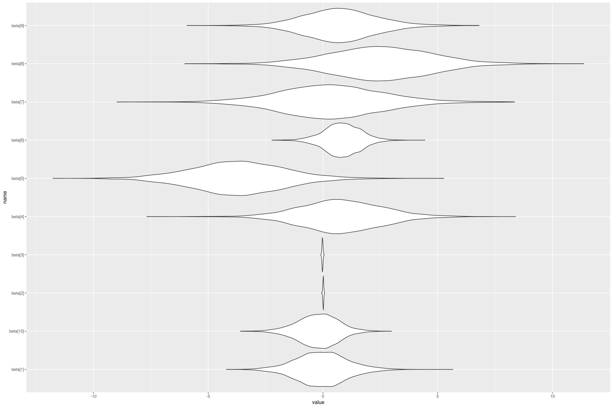

Getting Started with RStan
I wanted to fit a Bayesian Tobit model, but I couldn’t find one (probably because I didn’t know how to look). So I decided to build one in Stan, which I had never used before. This article is the first in a series showing how I got there; this one builds a linear model in Stan and makes it useable from R using formula syntax, then next we add priors to the model, make model predictions from R, and then handle censored values with Tobit regression. I used the Methods Consultants Introduction to Stan in R to get started. A broader (but shallow) introduction is the Methods Bites Applied Bayesian Statistics Using Stan and R.
A simple place to start is a linear model \(y \sim N(\alpha + X \beta, \sigma)\) (often written, equivalently, as \(y \sim \alpha + X \beta + \epsilon\), where \(\epsilon \sim N(0, \sigma)\). We can write out the model in Stan explicitly as follows and save it to linear_flat.stan:
// linear_flat.stan Linear model
data {
int<lower=0> N; // Number of data points
int<lower=0> K; // Number of predictors
matrix[N, K] X; // Predictor matrix
real y[N]; // Observations
}
parameters {
real alpha; // intercept
vector[K] beta; // coefficients for predictors
real<lower=0> sigma; // error scale
}
model {
y ~ normal(alpha + X * beta, sigma); // target density
}Note that another way we could have written the model is in terms of how it increments the log probability target += normal_lpdf(y | alpha + X * beta, sigma), but for simple cases like this I find the sampling statement y ~ normal(alpha + X * beta, sigma) much clearer.
We can then construct some data in R and fit the model using rstan::stan (assuming “linear_flat.stan” is in the working directory):
predictors <- mtcars[, 2:ncol(mtcars)]
stan_data <- list(
N = nrow(mtcars),
K = ncol(predictors),
X = predictors,
y = mtcars$mpg
)
fit <- rstan::stan("linear_flat.stan", data=stan_data)The fit is a stanfit object which contains the matrix of posterior draws, which is useful for all kinds of things. For example we could plot the posterior distributions of the coefficients (although note because we haven’t standardised the regression variables the coefficients aren’t comparable to each other - a small coefficient on a variable that changes a lot could have a big impact).
library(dplyr)
library(tidyr)
library(ggformula)
fit %>%
as.data.frame() %>%
pivot_longer(starts_with("beta")) %>%
gf_violin(name ~ value, scale="width")
We can also get out estimates of the regression coefficients and their variation, by taking their median and (scaled) Median Absolute Deviation. Note as well as the coefficients (we also get the lp__ which is the log density up to a constant, which I’m not interested in here).
rbind(as.data.frame(fit) %>% summarise_all(median),
as.data.frame(fit) %>% summarise_all(mad)) %>%
mutate_all(round, 1)The first row is the estimate (median) and the second is the error (MAD SD)
| alpha | beta[1] | beta[2] | beta[3] | beta[4] | beta[5] | beta[6] | beta[7] | beta[8] | beta[9] | beta[10] | sigma | lp__ |
|---|---|---|---|---|---|---|---|---|---|---|---|---|
| 10.71 | -0.07 | 0.01 | -0.02 | 0.76 | -3.68 | 0.84 | 0.29 | 2.50 | 0.68 | -0.19 | 2.77 | -46.93 |
| 19.59 | 1.07 | 0.02 | 0.02 | 1.72 | 1.98 | 0.77 | 2.15 | 2.23 | 1.50 | 0.86 | 0.45 | 3.02 |
This gives similar estimates to lm(mpg ~ ., data=mtcars) or rstanarm::stan_glm(mpg ~ ., data=mtcars, prior=NULL, prior_intercept = NULL, prior_aux = NULL).
This works but it’s a bit of work to get all the right data for Stan in R, and the coefficients names like beta[2] are not very meaningful. Let’s look at making 3 improvments:
- Using a formula interface to get the coefficients
- Adding names to the outputs
- Wrapping it all in a function
Using formula interface to get the coefficients
If we have a formula like mpg ~ . and a data frame we need to get the vector of responses (e.g. mtcars$mpg) and the matrix of predictors.
For getting the responses I couldn’t find a simpler way than model.response(model.frame(formula, data)). The model.frame extracts all the columns from the formula, response and predictors, and the model.response just gets the column of responses.
The predictors matrix can be extracted using model.matrix. Unfortunately this also contains the intercept which we want to take out of our matrix (a more flexible solutions is to remove \(\alpha\) from the model).
Here’s a little piece of logic to remove the first column, which should be the intercept, from the model. This will fail for formula’s without an intercept (e.g. mpg ~ cyl - 1).
remove_intercept_from_model <- function(X) {
if (colnames(X)[1] == '(Intercept)') {
X[,-1, drop=FALSE]
} else {
stop('Missing Intercept')
}
}Note the drop=FALSE which prevents it converting X to a vector when there’s only one column left. This is important because Stan is expecting a matrix (as I learned the hard way).
Here’s some examples of using this:
X <- matrix(c(1,2,3,4,5,6), ncol=2)
colnames(X) <- c('(Intercept)', 'foo')
remove_intercept_from_model(X)| foo |
|---|
| 4 |
| 5 |
| 6 |
X <- matrix(c(1,2,3,4,5,6), ncol=3)
colnames(X) <- c('(Intercept)', 'foo', 'bar')
remove_intercept_from_model(X)| foo | bar |
|---|---|
| 3 | 5 |
| 4 | 6 |
Adding useful names to the model
It turns out we can just set the names of the stanfit object to the appropriate variable names, and it will propagate everywhere. To do this I needed some logic that would take the names from the stanfit object, and the coefficient names, and return the vector of names to set. I’ll assume that alpha and beta[...], and sigma are the first coefficients (as specified in the parameters of the Stan model), and just try to update alpha and beta[...].
get_linear_names <- function(fit_names, coef_names) {
# Should check (Intercept) not in coef_names
if (fit_names[1] != 'alpha') {
stop("Unexpected name alpha")
}
K <- length(coef_names)
if (!all(fit_names[2:(1+K)] == paste0('beta[', 1:K, ']'))) {
stop("Unexpected name in beta")
}
# Check nothing is missing
if (fit_names[2+K] != "sigma") {
stop("Expected Sigma")
}
c('(Intercept)', coef_names, fit_names[(K+2):length(fit_names)])
}get_linear_names(c('alpha', 'beta[1]', 'beta[2]', 'sigma', 'cat'),
c('a', 'b'))Gives '(Intercept)' 'a' 'b' 'sigma' 'cat'
Wrapping it in a function
Now we have all the pieces we can combine it all together into an easy to use function:
fit_stan_linear_flat <- function(formula, data,
...) {
y <- model.response(model.frame(formula, data))
X <- remove_intercept_from_model(model.matrix(formula, data))
K <- ncol(X)
N <- nrow(data)
fit <- rstan::stan(
file = "linear_flat.stan",
data = list(
N = nrow(X),
K = ncol(X),
X = X,
y = y
),
...
)
names(fit) <- get_linear_names(names(fit), colnames(X))
fit
}Then running our model is as easy as fit_stan_linear_flat(mpg ~ ., data=mtcars), giving the same model as before but with more helpful column names. This function should be pretty much equivalent to rstanarm::stan_glm(formula, data=data, prior=NULL, prior_intercept = NULL, prior_aux = NULL), but the latter runs much faster because of optimisation tricks (for many predictors setting QR=TRUE in stan_glm makes it run much faster again).
So we can now run our custom built Bayesian linear regression in Stan and R. But what priors did we set on the coefficients? From the Stan User Guide
In Stan, if you declare but don’t define a parameter it implicitly has a flat prior (on the scale in which the parameter is defined)
We could do better by setting a weakly informative prior, or an informative prior where we have one. We talk through how to that in the next article.